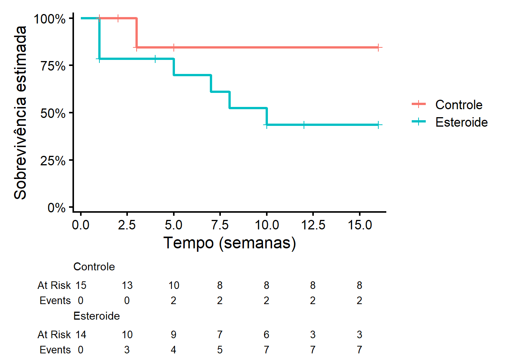
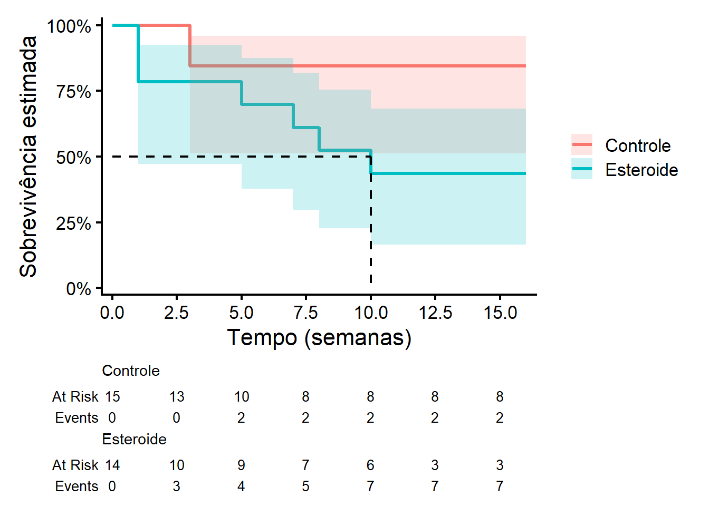

Código
require(ggplot2)
require(survival)
require(ggsurvfit)
require(muhaz)Para esta primeira aula prática de Análise de Sobrevivência e Confiabilidade, precisaremos dos seguintes pacotes:
require(ggplot2)
require(survival)
require(ggsurvfit)
require(muhaz)Pacote ggplot2: Pacote fundamental para construção de gráficos no R
Pacote survival: É o pacote básico para o estudo de Análise de Sobrevivência e Confiabilidade. Contém as principais rotinas, incluindo definição de objetos Surv, curvas Kaplan-Meier, modelos Cox e modelos paramétricos.
Pacote ggsurvfit: O pacote survivaldo R ajusta e traça curvas de sobrevivência (confiabilidade) usando gráficos básicos do R. Os gráficos do pacote ggsurvfit são baseados na estrutura gráfica do pacote ggplot2.
Pacote muhaz: O pacote muhaz do R estima a função de risco de forma não paramétrica a partir de dados de sobrevivência. Ele permite calcular estimativas suaves do risco ao longo do tempo, auxiliando na análise detalhada da taxa de eventos e no diagnóstico de modelos de sobrevivência. Os gráficos gerados pelo pacote ajudam a visualizar variações temporais no risco.
Esta seção é dedicada à descrição das bases de dados utilizadas nesta aula.

Um estudo clínico aleatorizado com o objetivo de investigar o efeito da terapia com esteroide no tratamento de hepatite viral aguda. Vinte e nove pacientes com esta doença foram aleatorizados para receber um placebo ou o tratamento com esteroide. Cada paciente foi acompanhado por 16 semanas ou até a morte (evento de interesse) ou até a perda de acompanhamento. Os dados são retratados a seguir:


Os dados mostrados a seguir representam o tempo até a ruptura de um tipo de isolante elétrico sujeito a uma tensão de estresse de 35 Kvolts. O teste consistiu em deixar 25 destes isolantes funcionando até que 15 deles falhassem (censura do tipo II), obtendo-se os seguintes resultados (em minutos):
0,19 0,78 0,96 1,31 2,78 3,16 4,67 4,85 6,50 7,35 8,27 12,07 32,52 33,91 36,71

O estudo é constituído de pacientes portadores de HIV atendidos entre 1986 e 2000 no Instituto de Pesquisa Clínica Evandro Chagas (Ipec/Fiocruz). Dessa coorte, obteve-se uma amostra de 193 indivíduos que foram diagnosticados como portadores de AIDS (critério CDC 1993) durante o período de acompanhamento. O objetivo é mensurar o tempo, em dias, do diagnóstico até a morte dos pacientes. Para comparação da sobrevivência, vamos ver como o sexo impacta a sobrevivência do paciente. Essa base de dados está armazenada no objeto DadosAIDS.csv
Na aula teórica, vimos os seguintes:
A estimação não paramétrica da função \(S(t)\) a partir do estimador de Kaplan-Meier: \(\hat{S}(t)=\prod_{j:t_j\leq t}\left(1-\frac{d_j}{n_j}\right).\)
A variância do estimador Kaplan-Meier obtida pela fórmula de Greenwood: \(\text{Var}\left(\hat{S}(t)\right) = \left[\hat{S}(t)\right]^2 \sum_{j:t_j \le t} \frac{d_j}{n_j (n_j - d_j)}\)
três abordagens para construir os intervalos de confiança para \(S(t)\):
Para exemplificar a aplicação destes conteúdos, vamos utilizar os dados de Hepatite. Lembre-se que sempre observamos uma amostra de \(n\) elementos. Os dados observados de sobrevivência (confiabilidade) para o elemento \(i\), com \(i = 1, 2, 3, ..., n\), são representados, em geral, pelo par
\[(t_i , \delta_i ),\]
em que:
\(\delta_i=\begin{cases} 1, \quad \textrm{se } t_i \textrm{ é um tempo de ocorrência do evento de interesse}\\ 0, \quad \textrm{se } t_i \textrm{ é um tempo censurado} \end{cases}\)
Como a base é pequena, vamos criar os dados manualmente:
tempos <- c(1,2,3,3,3,5,5,16,16,16,16,16,16,16,16,1,1,1,1,4,5,7,8,10,10,12,16,16,16)
cens <- c(0,0,1,1,0,0,0,0,0,0,0,0,0,0,0,1,1,1,0,0,1,1,1,1,0,0,0,0,0)
grupos <- c(rep("Controle",15),rep("Esteroide",14))
Dados1 <- data.frame(tempos,cens,grupos)tempos guarda os valores dos tempos \(t_i\), para \(i=1,2,...,29\)cens guarda a indicadora \(\delta_i\), para \(i=1,2,...,29\)grupos indica o grupo o qual os pacientes estão submetidos: Controle ou EsteroideAs estimativas de Kaplan-Meier para os grupos Controle e Esteroide, associados aos dados de Hepatite, podem ser obtidas a partir da função survfit2() do pacote ggsurvfit. Essa função é uma ligeira adaptação da função survfit do pacote survival, para melhor preservar os elementos para a representação gráfica. Essa função possui os seguintes argumentos básicos:
data: A base de dados.
formula: Essa fórmula quase sempre tem essa estrutura: Surv(tempos,cens)~grupos.
Surv(tempos,cens)~1.conf.int: Nível de confiança do intervalo.
conf.type: Para o intervalo de confiança básico, utilize conf.type = "plain". Para o intervalo de confiança com a transformação log use conf.type = "log" (default do R). Para o intervalo de confiança com a transformação log-log, utilize conf.type = "log-log".
Assim, vamos estimar a função de sobrevivência pelo estimador de Kaplan-Meier a partir dos dados de Hepatite utilizando um intervalo com 95% de confiança sem transformação:
ekm<- survfit2(data=Dados1,
formula = Surv(tempos,cens)~grupos,
conf.type = "plain",
conf.int=0.95)
summary(ekm)Call: survfit(formula = Surv(tempos, cens) ~ grupos, data = Dados1,
conf.type = "plain", conf.int = 0.95)
grupos=Controle
time n.risk n.event survival std.err lower 95% CI
3.000 13.000 2.000 0.846 0.100 0.650
upper 95% CI
1.000
grupos=Esteroide
time n.risk n.event survival std.err lower 95% CI upper 95% CI
1 14 3 0.786 0.110 0.571 1.000
5 9 1 0.698 0.128 0.448 0.948
7 8 1 0.611 0.138 0.340 0.882
8 7 1 0.524 0.143 0.243 0.805
10 6 1 0.437 0.144 0.155 0.718Agora vamos estimar a função de sobrevivência pelo estimador de Kaplan-Meier a partir dos dados de Hepatite utilizando um intervalo com 95% de confiança com a transformação log:
ekm2<- survfit2(data=Dados1,
formula = Surv(tempos,cens)~grupos,
conf.type = "log",
conf.int=0.95)
summary(ekm2)Call: survfit(formula = Surv(tempos, cens) ~ grupos, data = Dados1,
conf.type = "log", conf.int = 0.95)
grupos=Controle
time n.risk n.event survival std.err lower 95% CI
3.000 13.000 2.000 0.846 0.100 0.671
upper 95% CI
1.000
grupos=Esteroide
time n.risk n.event survival std.err lower 95% CI upper 95% CI
1 14 3 0.786 0.110 0.598 1.000
5 9 1 0.698 0.128 0.488 0.999
7 8 1 0.611 0.138 0.392 0.952
8 7 1 0.524 0.143 0.306 0.896
10 6 1 0.437 0.144 0.229 0.832Agora vamos estimar a função de sobrevivência pelo estimador de Kaplan-Meier a partir dos dados de Hepatite utilizando um intervalo com 95% de confiança com a transformação log-log:
ekm3<- survfit2(data=Dados1,
formula = Surv(tempos,cens)~grupos,
conf.type = "log-log",
conf.int=0.95)
summary(ekm3)Call: survfit(formula = Surv(tempos, cens) ~ grupos, data = Dados1,
conf.type = "log-log", conf.int = 0.95)
grupos=Controle
time n.risk n.event survival std.err lower 95% CI
3.000 13.000 2.000 0.846 0.100 0.512
upper 95% CI
0.959
grupos=Esteroide
time n.risk n.event survival std.err lower 95% CI upper 95% CI
1 14 3 0.786 0.110 0.472 0.925
5 9 1 0.698 0.128 0.378 0.876
7 8 1 0.611 0.138 0.298 0.819
8 7 1 0.524 0.143 0.227 0.754
10 6 1 0.437 0.144 0.164 0.683Para todas as saídas, observe que:
time: Os tempos distintos de ocorrência do evento (\(t_j\))n.risk: \(n_j\)n.event: \(d_j\)survival: Estimativa de Kaplan-Meier para \(S(t_j)\)std.error: Desvio padrão associado à estimativa de Kaplan-Meier (raiz quadrada da variância de Greenwood)lower CI e upper CI: limites do intervalo de confiança solicitado e com a confiança especificada.Para visualizar o gráfico com a função de sobrevivência estimada, vamos usar o objeto ekm3 (transformação log-log). O gráfico é feito com a função ggsurvplot() do pacote ggsurvfit com os comandos:
ggsurvfit(ekm3, linewidth = 1.2) +
add_risktable() +
add_censor_mark(size = 2, alpha = 1)+
scale_ggsurvfit() +
labs(
x = "Tempo (semanas)",
y = "Sobrevivência estimada"
) +
theme_classic(base_size = 16) 
Para incluir o intervalo de confiança, basta acrescentar o comando add_confidence_interval()
ggsurvfit(ekm3, linewidth = 1.2) +
add_confidence_interval() +
add_risktable() +
scale_ggsurvfit() +
labs(
x = "Tempo (semanas)",
y = "Sobrevivência estimada"
) +
theme_classic(base_size = 16)
Os comandos para realizar estes gráficos são descritos a seguir
ggsurvfit(ekm3, linewidth = 1.2)
→ gera a curva de sobrevivência (Kaplan–Meier)
→ linewidth: espessura da linha
add_risktable()
→ adiciona a tabela de indivíduos sob risco ao longo do tempo
add_censor_mark(size = 2, alpha = 1)
→ adiciona marcas de censura na curva
→ size: tamanho
→ alpha: transparência
add_confidence_interval()
→ adiciona o intervalo de confiança da curva (faixa sombreada)
scale_ggsurvfit()
→ coloca o eixo y em porcentagem.
labs(x = ..., y = ...)
→ define os rótulos dos eixos
theme_classic(base_size = 16)
→ aplica um tema limpo
→ base_size: tamanho da fonte
Para mais detalhes sobre o a função ggsurvfitt, basta consultar o site ggsurvfit
Na aula teórica, vimos os seguintes:
A estimativa não paramétrica do percentil \(t_p\) é \[ \hat{t_p} = \min \{ t_j \mid \hat{S}(t_j) \leq 1-\frac{p}{100} \} \]
Os intervalos de confiança para o percentil \(t_p\) são obtidos de maneira gráfica traçando uma linha horizontal no eixo da probabilidade de sobrevivência no valor correspondente ao quantil desejado.
Encontre a interseção dessa linha horizontal com as três curvas: a curva de sobrevivência estimada, o limite inferior do IC e o limite superior do IC.
A partir da função quantile do R, é possível estimar qualquer percentil dos tempos de ocorrência do evento de interesse. Essa função também apresenta o intervalo de confiança de 95% atrelado a essa estimativa. Utilize o seguinte esquema:
quantile("Objeto_surv","percentil")Por exemplo, para os dados de pacientes com hepatite, tem-se as seguintes estimativas e intervalos de confiança para o \(t_{10}\), avaliado em cada grupo:
quantile(ekm3,0.1)$quantile
10
grupos=Controle 3
grupos=Esteroide 1
$lower
10
grupos=Controle 3
grupos=Esteroide 1
$upper
10
grupos=Controle NA
grupos=Esteroide 5Note que algumas estimativas no
Rnão podem ser obtidas. Isso se deve, no nosso caso, ao pequeno tamanho de amostra e excesso de censuras.
Note que como o intervalo calculado herda as especificações da função
survfit2.
Graficamente, podemos acrescentar esse percentil no gráfico adicionando o comando add_quantile("1-probabilidade(s)")
p=0.1
ggsurvfit(ekm3, linewidth = 1.2) +
add_confidence_interval() +
add_quantile(1-p)+
add_risktable() +
scale_ggsurvfit() +
labs(
x = "Tempo (semanas)",
y = "Sobrevivência estimada"
) +
theme_classic(base_size = 16)
Agora considere as seguintes estimativas e intervalos de confiança para o \(t_{50}\), avaliado em cada grupo:
quantile(ekm3,0.5)$quantile
50
grupos=Controle NA
grupos=Esteroide 10
$lower
50
grupos=Controle NA
grupos=Esteroide 1
$upper
50
grupos=Controle NA
grupos=Esteroide NAGraficamente:
p=0.5
ggsurvfit(ekm3, linewidth = 1.2) +
add_confidence_interval() +
add_quantile(1-p)+
add_risktable() +
scale_ggsurvfit() +
labs(
x = "Tempo (semanas)",
y = "Sobrevivência estimada"
) +
theme_classic(base_size = 16)
# 🔹 Separando os grupos
dados_controle <- Dados1 %>% filter(grupos == "Controle")
dados_esteroide <- Dados1 %>% filter(grupos == "Esteroide")
# 🔹 Estimando hazard (muhaz)
haz_controle <- muhaz(
max.time = 16,
times = dados_controle$tempos,
delta = dados_controle$cens
)
haz_esteroide <- muhaz(
max.time = 16,
times = dados_esteroide$tempos,
delta = dados_esteroide$cens
)
# 🔹 Organizando resultados
df_controle <- data.frame(
tempo = haz_controle$est.grid,
hazard = haz_controle$haz.est,
grupo = "Controle"
)
df_esteroide <- data.frame(
tempo = haz_esteroide$est.grid,
hazard = haz_esteroide$haz.est,
grupo = "Esteroide"
)
df <- bind_rows(df_controle, df_esteroide)
# 🔹 Gráfico
ggplot(df, aes(x = tempo, y = hazard, color = grupo)) +
geom_line(linewidth = 1.2) +
labs(
x = "Tempo (semanas)",
y = expression(lambda(t)),
color = "Grupo"
) +
theme_classic(base_size = 16)fit_na <- survfit2(
Surv(tempos, cens) ~ grupos,
data = Dados1,
conf.type = "log",
type = "fh"
)
ggsurvfit(fit_na,
linewidth = 1.2,
type = "cumhaz") +
add_confidence_interval() +
labs(
x = "Tempo (semanas)",
y = "Função de risco acumulada estimada"
) +
theme_classic(base_size = 16)
Utilize a transformação log-log, quando necessário
1- Base de dados Isolantes Elétricos.
A partir da descrição dos dados, construa a base de dados e guarde em um objeto chamado Dados2.
Obtenha as estimativas para as funções de sobrevivência a partir do estimador de Kaplan-Meier. Faça um gráfico com o intervalo construído.
2- Base de dados AIDS.
Leia a base de dados e guarde em um objeto Dados3.
Considerando os dados completos (sem estratificar por sexo), obtenha as estimativas para a função de sobrevivência a partir do estimador de Kaplan-Meier e faça um gráfico com o intervalo construído.
Você acha que as funções de sobrevivência de homens e mulheres são diferentes?
Encontre uma estimativa pontual e intervalar para os tempos em dias tal que 20% dos pacientes do sexo masculino e do sexo feminino já morreram.